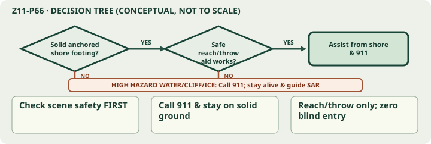

Z11-P66 · Navigation, weather and rescue · New manuscript
Avoid dangerous bystander self-rescue into cliffs, fast water or weak ice
Prevent untrained companions from becoming additional casualties during high-consequence terrain or water emergencies.
When it applies · Witnessing a companion fall down a cliff, sweep into fast water or break through thin ice.
Equipment · Phone/communicator, reach/throw aids from solid ground and warm dry layers.

Actions
- Pause and assess scene safety FIRST—entering swiftwater, steep loose cliffs, avalanche paths or weak lake ice without specialized training and gear routinely turns one victim into multiple fatalities.[T01, X18, E12]
- Activate 911 / SAR immediately with exact location and hazard details while establishing calm voice contact with the victim from a secure anchored position on solid ground.[T02, T06, X18]
- Offer ONLY low-risk shore-based assistance (extending a long branch, throwing a float/rope from firm ground, lowering dry warm clothing if safely anchored)—never climb unroped down slick cliffs or walk out onto broken ice.[T01, X18, K09]
Failure recognition · Running straight onto cracked lake ice or diving into freezing swiftwater to grab a struggling friend without flotation or training.[T01, X18, X02]
Verify · Confirm every rescuer remains on solid safe ground, 911 is activated and any reach/throw aid keeps the helper securely anchored back from the edge.[T01, T02, X18, ED]
Stop or change course · When shore-based reach/throw cannot safely reach the victim, stay alive on safe ground, keep visual tracking of their position and guide arriving professional rescue teams.[T01, T02, X18]
Evidence and editorial notes
- E12 · Minnesota DNR · Ice Safety (current web edition)
- Section: Ice Safety > basic precautions · Conditions: Minnesota ice edges and travel routes
Support: No ice is universally safe. Strength can differ over short distances; appearance or tracks alone cannot establish a safe crossing.
Limitations: Currents, springs, snow insulation, and freeze-thaw cycles weaken ice invisibly. · Conflicting evidence: None; mandates shore-bound detour for foundational walking parties.
Editorial note: Maintains strict separation from specialized B013 ice chapters. · Specialist reviewer: Ice safety and search and rescue
Primary source · checked 2026-11-24 - K09 · USDA Forest Service · Handtools for Trail Work (0523-2810-MTDC) (agency handbook)
- Section: Cordage, Anchors and Rigging Boundaries · Conditions: Non-life-safety camp lashing, tarps, haul lines and tie-downs
Support: Cordage strength drops significantly at knots, sharp bends, wet fibers, UV exposure and abrasion; inspect fibers before loading and never use unrated camp cord or improvised bindings for life-safety suspension or climbing.
Limitations: No universal breaking strength applies to natural plant fibers or weathered salvaged rope. · Conflicting evidence: Counters folklore claims equating improvised cordage to rated climbing rope.
Editorial note: Separates camp utility lashing/hauling from life-safety rigging. · Specialist reviewer: Rigging safety and materials mechanics
Primary source · checked 2026-11-24 - T01 · American Red Cross · First Aid Steps (current web edition)
- Section: First Aid Steps > Check the scene; check the person · Conditions: Lay responder in United States; assess safety before contact
Support: Check scene safety, responsiveness, breathing and immediately life-threatening conditions.
Limitations: Lay guidance does not replace advanced clinical or rescue protocols. · Conflicting evidence: None; universal first-response opening gate.
Editorial note: Anchors scene-safety-first rule across Z01. · Specialist reviewer: EMS and wilderness medicine
Primary source · checked 2026-11-24 - T02 · American Red Cross · First Aid Steps (current web edition)
- Section: First Aid Steps > Call 9-1-1 · Conditions: Lay emergency response to unresponsiveness, abnormal breathing or severe bleeding
Support: Activate EMS and get needed equipment. Follow dispatcher directions and act within training.
Limitations: Remote locations may delay EMS arrival, requiring sustained stabilization after activation. · Conflicting evidence: None; aligns with NPS-E.
Editorial note: Mandates early emergency activation and dispatcher adherence. · Specialist reviewer: EMS and wilderness medicine
Primary source · checked 2026-11-24 - T06 · NPS · Outdoor Emergency Plan (current web edition)
- Section: If you get lost or hurt; call for help · Conditions: Outdoor US emergency
Support: Communicate location, last known point, situation and needs. Stay put when unable to establish a safe route unless immediate danger requires movement.
Limitations: Cell signal is unreliable in backcountry terrain; pre-trip plans bridge communication gaps. · Conflicting evidence: None; core lost-person decision rule.
Editorial note: Foundation for stay/signal/move and dispatch handoff cards. · Specialist reviewer: Search and rescue
Primary source · checked 2026-11-24 - X02 · Minnesota DNR · Cold Water Safety (current web edition)
- Section: Cold Water Safety > Cold Shock, Swim Failure and Hypothermia · Conditions: Immersion in water below 70°F (especially below 50°F / winter ice water)
Support: Cold-water immersion triggers immediate involuntary gasp and hyperventilation (cold shock in the first 1–3 minutes), followed by rapid swimming failure (within ~10–15 minutes) before core hypothermia develops; wearing a fastened life jacket keeps the airway above water.
Limitations: Strong swimmers drown rapidly from cold shock and muscle incapacitation without flotation. · Conflicting evidence: Refutes myth that hypothermia is the only immediate cold-water killer.
Editorial note: Core physiological evidence for Z12 ice-breakthrough and maritime immersion cards. · Specialist reviewer: Cold-water rescue and wilderness medicine
Primary source · checked 2026-11-24 - X18 · Minnesota DNR · Ice Safety (current web edition)
- Section: Ice Safety > Self-Rescue and Witness Reach-Throw-Don't-Go · Conditions: Cold-water ice breakthrough on frozen lakes or rivers
Support: If you fall through ice, control breathing, turn back toward the direction you came from (known thicker ice), kick horizontally onto the shelf using ice picks if carried, roll away without standing immediately; witnesses MUST stay off weak ice, call 911 and use reach/throw aids rather than walking out.
Limitations: Ice rescue carries extreme drowning risk for untrained rescuers; dry practice and qualified rescue review are mandatory. · Conflicting evidence: Directly aligns with B013 P06–P08 and P14; carries high-consequence specialist review hold.
Editorial note: Anchored in Z12 ice-breakthrough cards and logged in the Astra escalation register. · Specialist reviewer: Ice rescue, EMS and wilderness medicine
Primary source · checked 2026-11-24
Source lineage · ARC first aid, MN DNR ice and NPS emergency plan; new manuscript · Classification · New manuscript.